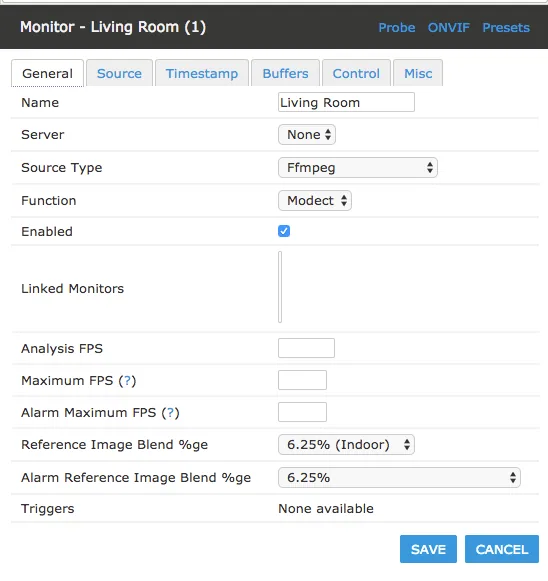

← 返回全部路线项目仓库中的 ZoneMinder 接入截图，展示摄像头可作为本地监控视频源；图片未单独声明授权。 查看图片来源 ↗
Xiaomi Dafang Hacks
- 为部分旧摄像头提供本地视频流和扩展控制。
- 4/5 个维度有可核验来源
- 只使用有可核验来源的维度并按有效权重重新归一；成本维度同时取得二手价与改造零件/工具投入来源。


它能变成什么
- 摄像头
- 设备范围 README 支持表中的小方/大方及部分 Ingenic 摄像头
- 设备类别 摄像头
- AI 关系 传统复活基础设施
- 路线类型 平台 / 多机型工程
- 资料最近核对 2026-10-20
动手前
风险与恢复
- 数据丢失风险 可能发生
- 刷坏 / 无法启动风险 可能发生
- 恢复路线 先读取该型号 FAQ 和原固件备份方法；不能推断 T20L 与 T20 完全相同。
- 恢复资料 ↗（无已核验链接）
证据、维护与来源
- E1 · 源码与部署文档 README 有明确型号表、FAQ 和 CFW 安装文档，警告较新厂商固件会使该方法失效。
- 实机状态 KitAgain 未对此设备进行实机测试。
- 维护状态 超过一年无 push（不等于弃用）
- GitHub 最后 push 2024-11-25T06:53:53Z
- 仓库许可证 UNKNOWN（无已核验链接）
- 近期 push 不证明型号可用；根许可证也不自动覆盖固件、模型、品牌或第三方组件。
- 上游项目文档 ↗2026-10-20先用它了解项目能做什么、怎样开始，以及作者写明的限制。https://github.com/EliasKotlyar/Xiaomi-Dafang-Hacks/blob/master/README.md
项目账号与已核实作者主页
- EliasKotlyar · GitHub ↗ — 源码仓库所有者账号；不据此推断其为唯一作者